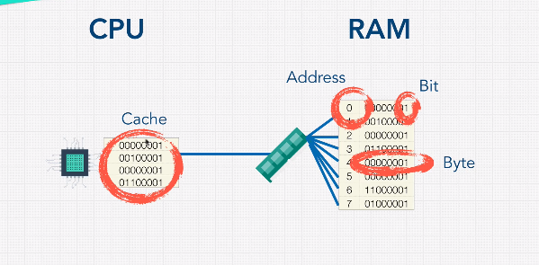
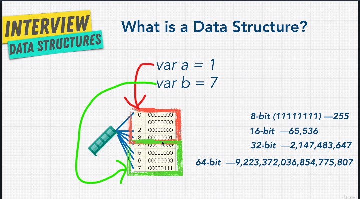

Are different types of containers used to store data - each one being good at storing a different type of data - like the fridge - the backpack - the drawer
how to use them - here we have to think which one will make our code better - readable-scalable - fast
always stored in RAM
our goal is to minimize the job of the CPU and memory controller when storing/ accessing/ .. the data in RAM
32 bits ↓
